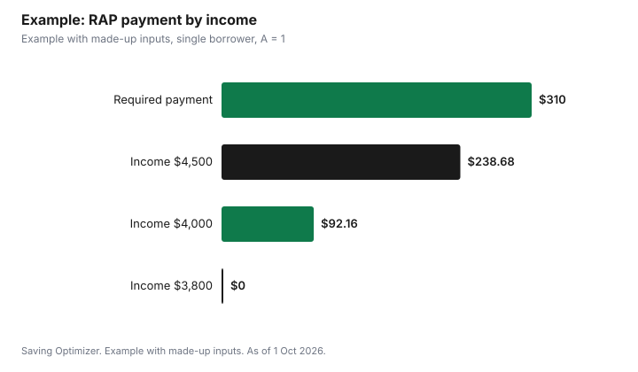

Education · Canada
Repayment Assistance Plan: How Much You Pay on Canada Student Loans

Under the federal Repayment Assistance Plan, your monthly payment depends on your gross family income and family size. If your income is at or below the threshold, you pay $0 on the federal part of your loan for six months; for a single person the threshold on canada.ca is $3,866 a month. Above the threshold, the Canada Student Financial Assistance Regulations set an affordable payment that starts at about 1.5% of family income and rises with income, capped at 10% of family income. You reapply every six months, and the government covers the federal interest your payment does not.
Key takeaways
- At or below the threshold, the federal payment is $0 for six months.
- Single person: $3,866 a month gross family income, per canada.ca.
- Above the threshold, the payment starts near 1.5% of family income and is capped at 10%.
- You must reapply every six months.
- Government pays the unpaid federal interest, and the principal after 60 months of RAP or 10 years after school.
- Example with made-up inputs: $4,500 a month gives about $239 a month instead of $310.
Income thresholds
Canada.ca lists these monthly gross family income thresholds. If you have a spouse or common-law partner, the formula below also accounts for their student loans. Canada.ca notes that thresholds may be different for the provincial part of your loan.
| Family size | Monthly threshold | Annual equivalent |
|---|---|---|
| 1 | $3,866 | $46,392 |
| 2 | $4,535 | $54,420 |
| 3 | $5,556 | $66,672 |
| 4 | $6,412 | $76,944 |
| 5 | $7,170 | $86,040 |
| 6 | $7,854 | $94,248 |
| 7 or more | $8,483 | $101,796 |
The annual figures are the monthly threshold multiplied by 12, shown for comparison with your tax return.
The payment formula
Section 19 of the Canada Student Financial Assistance Regulations defines the monthly affordable payment. It is $0 if monthly family income is no more than the threshold for your family size. Otherwise it is monthly family income multiplied by the lesser of two amounts: 0.1A, and 1.5 × [(X − Y) ÷ 100Z + 0.01] × A.
| Letter | Meaning |
|---|---|
| X | Your monthly family income |
| Y | The monthly income threshold for your family size |
| Z | The monthly increment for your family size in Schedule 1 of the regulations |
| A | Your share of the family's student loan principal; 1 if your spouse has no student loans |
Two things follow directly from the formula. Just above the threshold, X − Y is close to zero, so the bracket is about 0.01 and the payment is about 1.5% of family income. As income rises, the percentage climbs until it reaches the 0.1A cap, which for a borrower whose spouse has no student loans is 10% of family income. If your spouse also has student loans, A is less than 1, so your share of the payment is smaller.
Schedule 1 of the regulations prints a monthly increment for each family size, for example $250 for one person and $350 for two. The thresholds printed in that same schedule are lower than the current canada.ca figures, which suggests the published amounts are updated over time, so use the examples below to understand the shape of the formula, not to predict your exact payment. The NSLSC assessment decides the real amount.
Two tests to qualify for stage one
The regulations also compare your affordable payment with your required payment. You qualify for stage one only if the affordable payment is less than the required payment. The required payment is your outstanding full-time principal amortized over 120 months minus the months that have passed since you left school, with credit for months on interest-free relief or RAP. In plain terms, if your normal payment is already affordable by the formula, RAP will not lower it.
| Requirement | Rule |
|---|---|
| Where you live | In Canada, or a reservist or reservist's spouse deployed abroad, or on an international internship of a year or less |
| Loan status | In repayment: at least 6 months since you graduated or left school |
| Payments | Up to date on your loan payments |
| Renewal | Reapply every 6 months |
| Provincial part | Thresholds may differ; PEI borrowers must also apply with the province |
Example with made-up inputs: four incomes
These numbers are an example with made-up inputs. A single borrower whose spouse has no loans, so A = 1, uses the canada.ca threshold of $3,866 and the Schedule 1 increment of $250 printed in the regulations. Their regular required payment is $310 a month. At $3,800 of monthly family income, the payment is $0. At $4,000, the excess is $134; 134 ÷ 25,000 = 0.00536, plus 0.01, times 1.5 gives 2.304%, or $92.16. At $4,500, the excess is $634, which works out to 5.304%, or $238.68. At $5,500, the formula exceeds 10%, so the cap applies and the payment would be $550, which is above the $310 required payment, so this borrower would not qualify for RAP at that income.
| Monthly family income | Rate from formula | Affordable payment | Qualifies? |
|---|---|---|---|
| $3,800 | Below threshold | $0 | Yes |
| $4,000 | 2.304% | $92.16 | Yes |
| $4,500 | 5.304% | $238.68 | Yes |
| $5,500 | Capped at 10% | $550 | No; above the $310 required payment |

What the government pays
Canada.ca says that on RAP the Government of Canada pays any interest owing on the federal part of your loan that your reduced payment does not cover. After 60 months of RAP or 10 years after you finish school, it starts to pay down both principal and any remaining interest. The regulations limit stage one to the first 120 months after leaving school, and the combined time on interest-free relief and RAP stage one to 60 months. As long as you stay eligible, the balance continues to be paid down until it is paid in full.
Canada.ca says the maximum time a borrower can be in repayment after leaving school is, in most cases, 15 years, or 10 years for persons with a disability. Federal student loans have not charged interest since 1 April 2021, according to the 2026 Canada Gazette amendment, so on the federal part the interest relief matters less than it once did; provincial loans may still carry interest, depending on the province.
The catch: no new aid after principal relief
Canada.ca warns that once the federal government has paid towards your principal while you are on RAP, you cannot receive more student grants or loans until you repay your unpaid loans. If you might go back to school, factor this in. The restriction does not apply to RAP-D, the Repayment Assistance Plan for Borrowers with Disabilities, under which the government pays down both principal and any interest your reduced payments do not cover.
How to apply
- Wait until your loans are in repayment: at least six months after you leave school.
- Have your family income details ready for the application.
- Apply online through the National Student Loans Service Centre, signing in through My Service Canada Account, or mail the RAP application form to NSLSC, P.O. Box 4030, Mississauga ON L5A 4M4.
- If you have provincial loans, check whether you also need to apply with the province; PEI borrowers must.
- Keep making payments until you are approved.
- Set a reminder to reapply before your six months end.
For grace periods and your first payment, see student loan repayment and the grace period. For aid amounts while you study, see Canada Student Grant 2026-27.
Sources
- Government of Canada, Repay a student loan: repayment assistance, canada.ca (Wayback capture 13 Sep 2026 of the page modified 31 Jul 2026), as of 1 Oct 2026. Thresholds, eligibility, government payments, 15- and 10-year limits, principal relief restriction, how to apply.
- Canada Student Financial Assistance Regulations, SOR/95-329, section 19 and Schedule 1, laws-lois.justice.gc.ca, as of 1 Oct 2026. Affordable payment formula, required payment, stage one limits, monthly increments.
- Canada Gazette Part II, SOR/2026-139, published 1 Jul 2026. No interest on federal student loans since 1 April 2021.
- Incomes and the required payment in the example are an example with made-up inputs.
Frequently asked questions
How much will I pay on the Repayment Assistance Plan?
If your monthly gross family income is at or below the threshold for your family size, you pay $0 on the federal part for six months. Above it, the regulations set a payment that starts near 1.5% of family income and is capped at 10%.
What is the RAP income threshold for a single person?
Canada.ca lists $3,866 a month in gross family income for a family of one, as of 1 Oct 2026.
How often do I have to apply for RAP?
Every six months. Canada.ca says you must reapply every 6 months to stay eligible.
Does the government pay my loan on RAP?
It pays federal interest your reduced payment does not cover, and after 60 months of RAP or 10 years after you finish school it starts paying down principal and remaining interest.
Can I get more student loans after RAP?
Not after the federal government has paid towards your principal under RAP, until you repay your unpaid loans. This restriction does not apply to RAP-D.
How long can I be in repayment?
Canada.ca says the maximum time in repayment after leaving school is, in most cases, 15 years, or 10 years for persons with a disability.
Researched and drafted with AI assistance and fact-checked against official Canadian sources. How we create content.
Note: Education only, not financial advice.